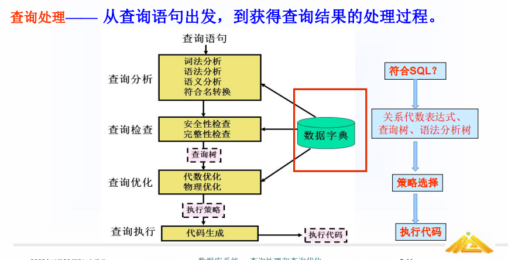
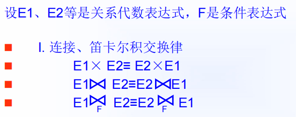
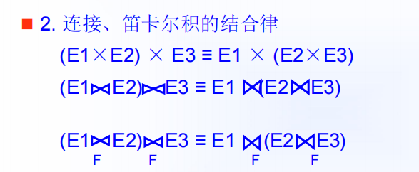
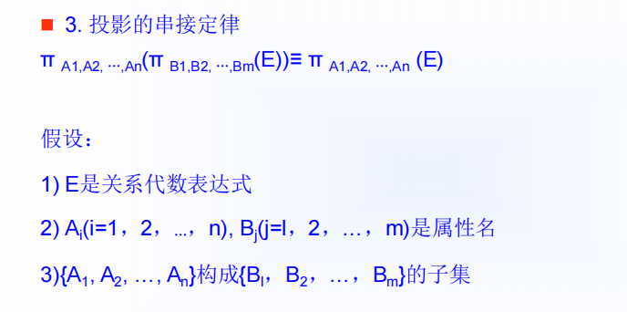
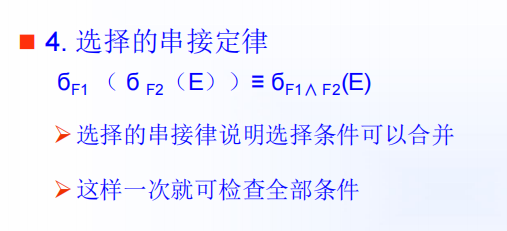
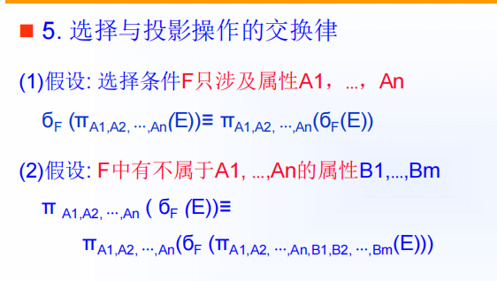
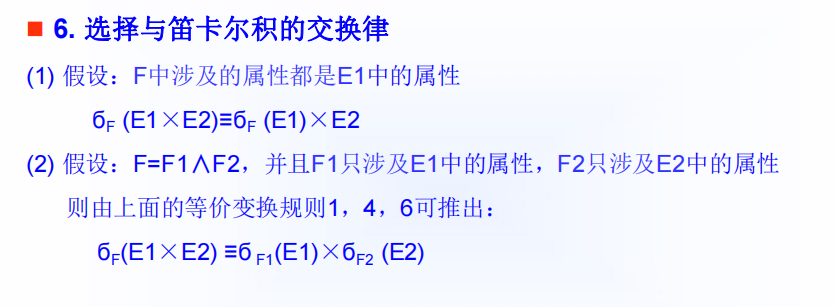
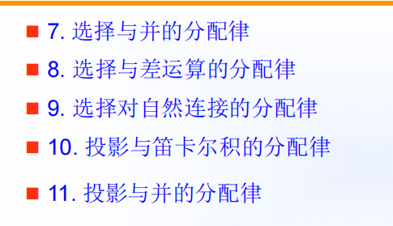

第九章 关系查询处理与查询优化
[TOC]
-
查询优化是查询处理的关键步骤
为什么要进行查询优化
-
关系数据库的执行效率问题
-
关系代数操作执行次序对效率的影响
-
关系查询优化是影响RDBMS性能的关键因素
如何使数据库查询的执行时间最短
-
语义优化
-
语法优化
-
执行优化
9.1 查询处理
9.1.1 查询处理的步骤

基本的步骤
-
查询分析
-
查询检查
-
查询优化
-
查询执行
连接操作是查询操作中最耗时的操作之一
查询处理的任务是把用户提交给RDBMS的查询语句转换为高效的执行计划
8.1.2 实现查询操作的算法示例
选择查询操作的方法
-
全表扫描法
-
索引扫描法
连接的方法
-
嵌套循环方法
-
排序-合并方法
-
索引连接方法
-
Hash Join方法
9.2 查询优化
查询优化的优点
-
优化器可以从数据字典中获取许多统计信息，而用户程序则难以获得这些信息
-
如果数据库的物理统计信息改变了，系统可以自动对查询重新优化以选择适应的执行计划
-
优化器可以考虑数百种不同的执行计划，程序员一般只能考虑有限的几种。
-
优化器中包括了很多复杂的优化技术，这些优化技术往往只有最好的程序员才能掌握。系统的自动优化相当于使得所有人都拥有这些优化技术。
查询优化的分类
-
代数优化
-
物理优化
在集中式数据库中，执行代价主要包括
-
磁盘存取快熟
-
处理机时间
-
查询的内存开销
学会代价的计算
在连接的时候使尽量少的记录来进行连接
先选择在做连接
9.3 代数优化
代数优化策略：通过对关系代数表达式的等价变换来提高查询效率
9.3.1 关系代数表达式等价变换规则







9.3.2 查询树的启发式优化
典型的启发式规则
-
选择运算应尽可能先做！！！
-
把投影运算和选择运算同时进行
-
把投影同其前或其后的双目（二元）运算结合起来
-
把某些选择同在它前面要执行的笛卡尔积结合起来成为一个连接运算
-
找出公共子表达式
优化算法
-
分解选择运算
-
通过交换选择运算，将其尽可能移到树的叶端
-
通过交换投影运算，将其尽可能移到叶端
-
合并串接的选择和投影，以便能同时执行或在一次扫描中完成
-
对内结点分组
9.4 物理优化
物理优化的方法
-
基于规则的启发式优化
-
基于代价估算的优化
-
两者结合的优化方法
启发式规则优化是定性的选择，适合解释执行的系统
编译执行的系统中查询优化和查询执行是分开的